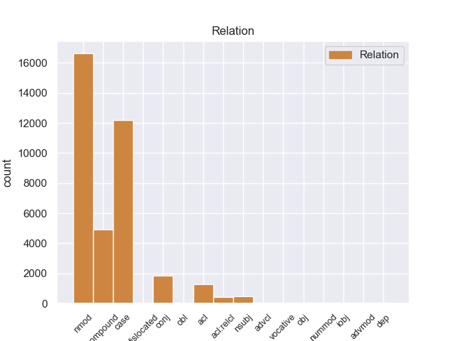
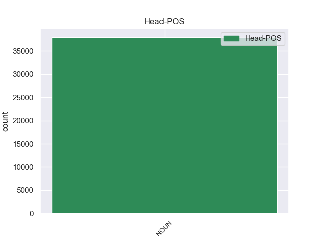
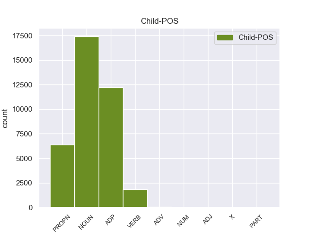

Distribution of features within this leaf



Agreement Rules sorted by frequency.
- When the dependent token is the case marking(case) of the head token, and the head token is NOUN and the dependent token is ADP.
1 इन _ _ _ _ 0 _ _ _
2 दोनों _ _ _ _ 0 _ _ _
3 देशों _ _ _ _ 0 _ _ _
4 के _ _ _ _ 0 _ _ _
5 बीच _ _ _ _ 0 _ _ _
6 रिश्ते _ _ _ _ 0 _ _ _
7 में _ _ _ _ 0 _ _ _
8 सुधार _ _ _ _ 0 _ _ _
9 से _ _ _ _ 0 _ _ _
10 करोड़ों _ _ _ _ 0 _ _ _
11 लोगों लोग NOUN NN Case=Acc|Gender=Masc|Number=Plur|Person=3 0 _ _ _
12 का का ADP PSP AdpType=Post|Case=Nom|Gender=Masc|Number=Sing 11 case _ ChunkId=NP4|ChunkType=child|Translit=kā
13 भला _ _ _ _ 0 _ _ _
14 होगा _ _ _ _ 0 _ _ _
15 । _ _ _ _ 0 _ _ _
1 इन _ _ _ _ 0 _ _ _
2 दोनों _ _ _ _ 0 _ _ _
3 देशों _ _ _ _ 0 _ _ _
4 के _ _ _ _ 0 _ _ _
5 बीच _ _ _ _ 0 _ _ _
6 रिश्ते _ _ _ _ 0 _ _ _
7 में _ _ _ _ 0 _ _ _
8 सुधार _ _ _ _ 0 _ _ _
9 से _ _ _ _ 0 _ _ _
10 करोड़ों _ _ _ _ 0 _ _ _
11 लोगों लोग NOUN NN Case=Acc|Gender=Masc|Number=Plur|Person=3 13 nmod _ ChunkId=NP4|ChunkType=head|Tam=0|Translit=logoṁ|Vib=0_का
12 का _ _ _ _ 0 _ _ _
13 भला भला NOUN NN Case=Nom|Gender=Masc|Number=Sing|Person=3 0 _ _ _
14 होगा _ _ _ _ 0 _ _ _
15 । _ _ _ _ 0 _ _ _
1 उन्होंने _ _ _ _ 0 _ _ _
2 यहां _ _ _ _ 0 _ _ _
3 वेटिकन _ _ _ _ 0 _ _ _
4 दूतावास _ _ _ _ 0 _ _ _
5 में _ _ _ _ 0 _ _ _
6 एक _ _ _ _ 0 _ _ _
7 शोक _ _ _ _ 0 _ _ _
8 पुस्तिका _ _ _ _ 0 _ _ _
9 पर _ _ _ _ 0 _ _ _
10 हस्ताक्षर _ _ _ _ 0 _ _ _
11 कर _ _ _ _ 0 _ _ _
12 पोप _ _ _ _ 0 _ _ _
13 जॉन _ _ _ _ 0 _ _ _
14 पॉल _ _ _ _ 0 _ _ _
15 द्वितीय द्वितीय PROPN NNP Case=Acc|Gender=Masc|Number=Sing|Person=3 17 nmod _ ChunkId=NP6|ChunkType=head|Tam=0|Translit=dvitīya|Vib=0_का
16 के _ _ _ _ 0 _ _ _
17 निधन निधन NOUN NN Case=Acc|Gender=Masc|Number=Sing|Person=3 0 _ _ _
18 पर _ _ _ _ 0 _ _ _
19 गहरा _ _ _ _ 0 _ _ _
20 दुख _ _ _ _ 0 _ _ _
21 प्रकट _ _ _ _ 0 _ _ _
22 किया _ _ _ _ 0 _ _ _
23 । _ _ _ _ 0 _ _ _
1 उन्होंने _ _ _ _ 0 _ _ _
2 इसे _ _ _ _ 0 _ _ _
3 चीनियों _ _ _ _ 0 _ _ _
4 का _ _ _ _ 0 _ _ _
5 हृदय हृदय NOUN NNC Case=Nom|Gender=Masc|Number=Sing|Person=3 6 compound _ ChunkId=NP4|ChunkType=child|Tam=0|Translit=hr̥daya|Vib=0
6 परिवर्तन परिवर्तन NOUN NN Case=Nom|Gender=Masc|Number=Sing|Person=3 0 _ _ _
7 करार _ _ _ _ 0 _ _ _
8 दिया _ _ _ _ 0 _ _ _
9 । _ _ _ _ 0 _ _ _
1 वैसे _ _ _ _ 0 _ _ _
2 तुषार _ _ _ _ 0 _ _ _
3 गांधी _ _ _ _ 0 _ _ _
4 को _ _ _ _ 0 _ _ _
5 भी _ _ _ _ 0 _ _ _
6 शुरू _ _ _ _ 0 _ _ _
7 में _ _ _ _ 0 _ _ _
8 इसका _ _ _ _ 0 _ _ _
9 अंदाजा अंदाजा NOUN NN Case=Nom|Gender=Masc|Number=Sing|Person=3 0 _ _ _
10 नहीं _ _ _ _ 0 _ _ _
11 होगा _ _ _ _ 0 _ _ _
12 कि _ _ _ _ 0 _ _ _
13 इस _ _ _ _ 0 _ _ _
14 मार्च _ _ _ _ 0 _ _ _
15 से _ _ _ _ 0 _ _ _
16 कांग्रेसियों _ _ _ _ 0 _ _ _
17 को _ _ _ _ 0 _ _ _
18 राजनीतिक _ _ _ _ 0 _ _ _
19 फायदा _ _ _ _ 0 _ _ _
20 मिलेगा मिल VERB VM Gender=Masc|Mood=Ind|Number=Sing|Person=3|Tense=Fut|VerbForm=Fin|Voice=Act 9 acl _ ChunkId=VGF2|ChunkType=head|Stype=declarative|Tam=gA|Translit=milegā|Vib=गा
21 । _ _ _ _ 0 _ _ _
1 अपने _ _ _ _ 0 _ _ _
2 चार _ _ _ _ 0 _ _ _
3 - _ _ _ _ 0 _ _ _
4 दिवसीय _ _ _ _ 0 _ _ _
5 भारत _ _ _ _ 0 _ _ _
6 दौरे _ _ _ _ 0 _ _ _
7 के _ _ _ _ 0 _ _ _
8 दौरान _ _ _ _ 0 _ _ _
9 वे _ _ _ _ 0 _ _ _
10 भारतीय _ _ _ _ 0 _ _ _
11 नेताओं _ _ _ _ 0 _ _ _
12 से _ _ _ _ 0 _ _ _
13 सीमा _ _ _ _ 0 _ _ _
14 विवाद विवाद NOUN NN Case=Acc|Gender=Masc|Number=Sing|Person=3 0 _ _ _
15 और _ _ _ _ 0 _ _ _
16 अन्य _ _ _ _ 0 _ _ _
17 द्विपक्षीय _ _ _ _ 0 _ _ _
18 मसलों मसला NOUN NN Case=Acc|Gender=Masc|Number=Plur|Person=3 14 conj _ ChunkId=NP6|ChunkType=head|Tam=0|Translit=masaloṁ|Vib=0_पर
19 पर _ _ _ _ 0 _ _ _
20 बातचीत _ _ _ _ 0 _ _ _
21 करेंगे _ _ _ _ 0 _ _ _
22 । _ _ _ _ 0 _ _ _
1 उन्होंने _ _ _ _ 0 _ _ _
2 आरएसएस _ _ _ _ 0 _ _ _
3 कार्य _ _ _ _ 0 _ _ _
4 - _ _ _ _ 0 _ _ _
5 कर्ताओं _ _ _ _ 0 _ _ _
6 को _ _ _ _ 0 _ _ _
7 उन _ _ _ _ 0 _ _ _
8 ' _ _ _ _ 0 _ _ _
9 वोट _ _ _ _ 0 _ _ _
10 - _ _ _ _ 0 _ _ _
11 भूखे _ _ _ _ 0 _ _ _
12 ' _ _ _ _ 0 _ _ _
13 नेताओं नेता NOUN NN Case=Acc|Gender=Masc|Number=Plur|Person=3 0 _ _ _
14 से _ _ _ _ 0 _ _ _
15 चौकस _ _ _ _ 0 _ _ _
16 रहने _ _ _ _ 0 _ _ _
17 का _ _ _ _ 0 _ _ _
18 उपदेश _ _ _ _ 0 _ _ _
19 दिया _ _ _ _ 0 _ _ _
20 , _ _ _ _ 0 _ _ _
21 जो _ _ _ _ 0 _ _ _
22 पूरे _ _ _ _ 0 _ _ _
23 देश _ _ _ _ 0 _ _ _
24 को _ _ _ _ 0 _ _ _
25 कुछ _ _ _ _ 0 _ _ _
26 नहीं _ _ _ _ 0 _ _ _
27 समझते समझ VERB VM Aspect=Imp|Gender=Masc|Number=Plur|Person=3|VerbForm=Part|Voice=Act 13 acl:relcl _ ChunkId=VGF2|ChunkType=head|Stype=declarative|Tam=wA|Translit=samajhate|Vib=ता_है
28 हैं _ _ _ _ 0 _ _ _
29 । _ _ _ _ 0 _ _ _
1 इसके _ _ _ _ 0 _ _ _
2 आगे _ _ _ _ 0 _ _ _
3 इसी _ _ _ _ 0 _ _ _
4 तरह _ _ _ _ 0 _ _ _
5 की _ _ _ _ 0 _ _ _
6 कुछ _ _ _ _ 0 _ _ _
7 और _ _ _ _ 0 _ _ _
8 बातें बात NOUN NN Case=Nom|Gender=Fem|Number=Plur|Person=3 10 nsubj _ ChunkId=NP3|ChunkType=head|Tam=0|Translit=bāteṁ|Vib=0
9 उसी _ _ _ _ 0 _ _ _
10 भाषा भाषा NOUN NN Case=Acc|Gender=Fem|Number=Sing|Person=3 0 _ _ _
11 में _ _ _ _ 0 _ _ _
12 थीं _ _ _ _ 0 _ _ _
13 । _ _ _ _ 0 _ _ _
1 उन्होंने _ _ _ _ 0 _ _ _
2 कहा _ _ _ _ 0 _ _ _
3 कि _ _ _ _ 0 _ _ _
4 भारत भारत PROPN NNP Case=Nom|Gender=Masc|Number=Sing|Person=3 10 nsubj _ ChunkId=NP2|ChunkType=head|Tam=0|Translit=bhārata|Vib=0
5 और _ _ _ _ 0 _ _ _
6 चीन _ _ _ _ 0 _ _ _
7 सर्वाधिक _ _ _ _ 0 _ _ _
8 आबादी _ _ _ _ 0 _ _ _
9 वाले _ _ _ _ 0 _ _ _
10 देश देश NOUN NN Case=Nom|Gender=Masc|Number=Plur|Person=3 0 _ _ _
11 हैं _ _ _ _ 0 _ _ _
12 । _ _ _ _ 0 _ _ _
1 बिहार _ _ _ _ 0 _ _ _
2 के _ _ _ _ 0 _ _ _
3 पुलिस _ _ _ _ 0 _ _ _
4 प्रमुख _ _ _ _ 0 _ _ _
5 आशीष _ _ _ _ 0 _ _ _
6 रंजन _ _ _ _ 0 _ _ _
7 सिन्हा _ _ _ _ 0 _ _ _
8 ने _ _ _ _ 0 _ _ _
9 शुक्रवार _ _ _ _ 0 _ _ _
10 को _ _ _ _ 0 _ _ _
11 कहा _ _ _ _ 0 _ _ _
12 कि _ _ _ _ 0 _ _ _
13 लोजपा _ _ _ _ 0 _ _ _
14 प्रमुख प्रमुख NOUN NN Case=Acc|Gender=Masc|Number=Sing|Person=3 0 _ _ _
15 और _ _ _ _ 0 _ _ _
16 केंद्रीय _ _ _ _ 0 _ _ _
17 मंत्री मंत्री PROPN NNP Case=Acc|Gender=Masc|Number=Sing|Person=3 14 conj _ ChunkId=NP6|ChunkType=head|Tam=0|Translit=maṁtrī|Vib=0
18 राम _ _ _ _ 0 _ _ _
19 विलास _ _ _ _ 0 _ _ _
20 पासवान _ _ _ _ 0 _ _ _
21 को _ _ _ _ 0 _ _ _
22 जेड _ _ _ _ 0 _ _ _
23 श्रेणी _ _ _ _ 0 _ _ _
24 की _ _ _ _ 0 _ _ _
25 सुरक्षा _ _ _ _ 0 _ _ _
26 के _ _ _ _ 0 _ _ _
27 तहत _ _ _ _ 0 _ _ _
28 दी _ _ _ _ 0 _ _ _
29 गई _ _ _ _ 0 _ _ _
30 बिहार _ _ _ _ 0 _ _ _
31 पुलिस _ _ _ _ 0 _ _ _
32 कमांडो _ _ _ _ 0 _ _ _
33 की _ _ _ _ 0 _ _ _
34 सेवा _ _ _ _ 0 _ _ _
35 वापस _ _ _ _ 0 _ _ _
36 नहीं _ _ _ _ 0 _ _ _
37 ली _ _ _ _ 0 _ _ _
38 जाएगी _ _ _ _ 0 _ _ _
39 । _ _ _ _ 0 _ _ _
1 ब्रिटेन _ _ _ _ 0 _ _ _
2 के _ _ _ _ 0 _ _ _
3 प्रधानमंत्री _ _ _ _ 0 _ _ _
4 टोनी _ _ _ _ 0 _ _ _
5 ब्लेयर _ _ _ _ 0 _ _ _
6 इस _ _ _ _ 0 _ _ _
7 घटना _ _ _ _ 0 _ _ _
8 से _ _ _ _ 0 _ _ _
9 पहले _ _ _ _ 0 _ _ _
10 सबसे _ _ _ _ 0 _ _ _
11 लोकप्रिय _ _ _ _ 0 _ _ _
12 नेता नेता NOUN NN Case=Nom|Gender=Masc|Number=Sing|Person=3 0 _ _ _
13 थे _ _ _ _ 0 _ _ _
14 , _ _ _ _ 0 _ _ _
15 पर _ _ _ _ 0 _ _ _
16 अब _ _ _ _ 0 _ _ _
17 सबसे _ _ _ _ 0 _ _ _
18 अलोकप्रिय _ _ _ _ 0 _ _ _
19 बन बन VERB VM Gender=Masc|Number=Sing|Person=3|Polite=Form|Voice=Act 12 conj _ ChunkId=VGF2|ChunkType=head|Stype=declarative|Tam=0|Translit=bana|Vib=0_जा+या१_है
20 गए _ _ _ _ 0 _ _ _
21 हैं _ _ _ _ 0 _ _ _
22 । _ _ _ _ 0 _ _ _
1 जीएसआई _ _ _ _ 0 _ _ _
2 के _ _ _ _ 0 _ _ _
3 निदेशक _ _ _ _ 0 _ _ _
4 ने _ _ _ _ 0 _ _ _
5 कहा _ _ _ _ 0 _ _ _
6 कि _ _ _ _ 0 _ _ _
7 जो _ _ _ _ 0 _ _ _
8 लोग _ _ _ _ 0 _ _ _
9 नदी _ _ _ _ 0 _ _ _
10 किनारे _ _ _ _ 0 _ _ _
11 बसे _ _ _ _ 0 _ _ _
12 हैं _ _ _ _ 0 _ _ _
13 उन _ _ _ _ 0 _ _ _
14 लोगों _ _ _ _ 0 _ _ _
15 पर _ _ _ _ 0 _ _ _
16 इतना _ _ _ _ 0 _ _ _
17 खतरा खतरा NOUN NN Case=Nom|Gender=Masc|Number=Sing|Person=3 0 _ _ _
18 नहीं _ _ _ _ 0 _ _ _
19 है _ _ _ _ 0 _ _ _
20 जितना _ _ _ _ 0 _ _ _
21 समुद्र _ _ _ _ 0 _ _ _
22 के _ _ _ _ 0 _ _ _
23 किनारे _ _ _ _ 0 _ _ _
24 बसे _ _ _ _ 0 _ _ _
25 लोगों लोग NOUN NN Case=Acc|Gender=Masc|Number=Plur|Person=3 17 acl:relcl _ ChunkId=NP9|ChunkType=head|Tam=0|Translit=logoṁ|Vib=0_पर
26 पर _ _ _ _ 0 _ _ _
27 है _ _ _ _ 0 _ _ _
28 । _ _ _ _ 0 _ _ _
1 उन्होंने _ _ _ _ 0 _ _ _
2 कहा _ _ _ _ 0 _ _ _
3 कि _ _ _ _ 0 _ _ _
4 दक्षिण _ _ _ _ 0 _ _ _
5 इराक़ _ _ _ _ 0 _ _ _
6 के _ _ _ _ 0 _ _ _
7 बसरा _ _ _ _ 0 _ _ _
8 क्षेत्र _ _ _ _ 0 _ _ _
9 के _ _ _ _ 0 _ _ _
10 आस _ _ _ _ 0 _ _ _
11 - _ _ _ _ 0 _ _ _
12 पास पास ADV NST AdpType=Post|Case=Acc|Gender=Masc|Number=Sing|Person=3 14 nmod _ AltTag=ADV-NOUN|ChunkId=NP4|ChunkType=head|Translit=pāsa|Vib=0_का
13 के _ _ _ _ 0 _ _ _
14 इलाकों इलाका NOUN NN Case=Acc|Gender=Masc|Number=Plur|Person=3 0 _ _ _
15 में _ _ _ _ 0 _ _ _
16 दोनों _ _ _ _ 0 _ _ _
17 देशों _ _ _ _ 0 _ _ _
18 द्वारा _ _ _ _ 0 _ _ _
19 संयुक्त _ _ _ _ 0 _ _ _
20 रूप _ _ _ _ 0 _ _ _
21 से _ _ _ _ 0 _ _ _
22 तेल _ _ _ _ 0 _ _ _
23 भंडार _ _ _ _ 0 _ _ _
24 का _ _ _ _ 0 _ _ _
25 पता _ _ _ _ 0 _ _ _
26 लगाया _ _ _ _ 0 _ _ _
27 जाएगा _ _ _ _ 0 _ _ _
28 । _ _ _ _ 0 _ _ _
1 उन्होंने _ _ _ _ 0 _ _ _
2 हादसे _ _ _ _ 0 _ _ _
3 में _ _ _ _ 0 _ _ _
4 मरने मर VERB VM Case=Acc|Gender=Masc|Number=Plur|VerbForm=Inf 7 nmod _ ChunkId=VGNN|ChunkType=head|Tam=nA|Translit=marane|Vib=ना_वाला_का
5 वालों _ _ _ _ 0 _ _ _
6 के _ _ _ _ 0 _ _ _
7 आश्रितों आश्रित NOUN NN Case=Acc|Gender=Masc|Number=Plur|Person=3 0 _ _ _
8 को _ _ _ _ 0 _ _ _
9 मुआवजा _ _ _ _ 0 _ _ _
10 देने _ _ _ _ 0 _ _ _
11 तथा _ _ _ _ 0 _ _ _
12 घायलों _ _ _ _ 0 _ _ _
13 का _ _ _ _ 0 _ _ _
14 इलाज _ _ _ _ 0 _ _ _
15 कराने _ _ _ _ 0 _ _ _
16 का _ _ _ _ 0 _ _ _
17 ऐलान _ _ _ _ 0 _ _ _
18 किया _ _ _ _ 0 _ _ _
19 है _ _ _ _ 0 _ _ _
20 । _ _ _ _ 0 _ _ _
1 कैग _ _ _ _ 0 _ _ _
2 ने _ _ _ _ 0 _ _ _
3 शुक्रवार _ _ _ _ 0 _ _ _
4 को _ _ _ _ 0 _ _ _
5 संसद _ _ _ _ 0 _ _ _
6 में _ _ _ _ 0 _ _ _
7 पेश _ _ _ _ 0 _ _ _
8 अपनी _ _ _ _ 0 _ _ _
9 रिपोर्ट _ _ _ _ 0 _ _ _
10 में _ _ _ _ 0 _ _ _
11 कहा _ _ _ _ 0 _ _ _
12 कि _ _ _ _ 0 _ _ _
13 मुंबई _ _ _ _ 0 _ _ _
14 के _ _ _ _ 0 _ _ _
15 जुहू _ _ _ _ 0 _ _ _
16 सेंटॉर _ _ _ _ 0 _ _ _
17 और _ _ _ _ 0 _ _ _
18 एअरपोर्ट _ _ _ _ 0 _ _ _
19 सेंटॉर _ _ _ _ 0 _ _ _
20 होटलों _ _ _ _ 0 _ _ _
21 की _ _ _ _ 0 _ _ _
22 बिक्री _ _ _ _ 0 _ _ _
23 एकमात्र _ _ _ _ 0 _ _ _
24 बोली _ _ _ _ 0 _ _ _
25 के _ _ _ _ 0 _ _ _
26 आधार _ _ _ _ 0 _ _ _
27 पर _ _ _ _ 0 _ _ _
28 की _ _ _ _ 0 _ _ _
29 गई _ _ _ _ 0 _ _ _
30 थी _ _ _ _ 0 _ _ _
31 , _ _ _ _ 0 _ _ _
32 जबकि _ _ _ _ 0 _ _ _
33 इसे _ _ _ _ 0 _ _ _
34 कंपटीटिव _ _ _ _ 0 _ _ _
35 बिडिंग _ _ _ _ 0 _ _ _
36 ( _ _ _ _ 0 _ _ _
37 प्रतिस्पर्धात्मक _ _ _ _ 0 _ _ _
38 बोली _ _ _ _ 0 _ _ _
39 ) _ _ _ _ 0 _ _ _
40 के का ADP PSP AdpType=Post|Case=Acc|Gender=Masc|Number=Sing 41 dislocated _ ChunkId=FRAGP|ChunkType=head|Translit=ke
41 आधार आधार NOUN NN Case=Acc|Gender=Masc|Number=Sing|Person=3 0 _ _ _
42 पर _ _ _ _ 0 _ _ _
43 किया _ _ _ _ 0 _ _ _
44 जाना _ _ _ _ 0 _ _ _
45 चाहिए _ _ _ _ 0 _ _ _
46 था _ _ _ _ 0 _ _ _
47 । _ _ _ _ 0 _ _ _
1 गौरतलब _ _ _ _ 0 _ _ _
2 है _ _ _ _ 0 _ _ _
3 कि _ _ _ _ 0 _ _ _
4 समाज _ _ _ _ 0 _ _ _
5 की _ _ _ _ 0 _ _ _
6 दलित _ _ _ _ 0 _ _ _
7 और _ _ _ _ 0 _ _ _
8 वंचित _ _ _ _ 0 _ _ _
9 महिलाओं _ _ _ _ 0 _ _ _
10 के _ _ _ _ 0 _ _ _
11 सशक्तिकरण _ _ _ _ 0 _ _ _
12 के _ _ _ _ 0 _ _ _
13 लिए _ _ _ _ 0 _ _ _
14 किए कर VERB VM Aspect=Perf|Gender=Masc|Number=Plur|VerbForm=Part 17 compound _ ChunkId=VGNF|ChunkType=head|Tam=yA|Translit=kie|Vib=या_जा+या1
15 गए _ _ _ _ 0 _ _ _
16 प्रशंसनीय _ _ _ _ 0 _ _ _
17 कार्यो कार्य NOUN NN Case=Acc|Gender=Masc|Number=Plur|Person=3 0 _ _ _
18 के _ _ _ _ 0 _ _ _
19 लिए _ _ _ _ 0 _ _ _
20 उन्हें _ _ _ _ 0 _ _ _
21 संयुक्त _ _ _ _ 0 _ _ _
22 राष्ट्र _ _ _ _ 0 _ _ _
23 ने _ _ _ _ 0 _ _ _
24 यह _ _ _ _ 0 _ _ _
25 अवसर _ _ _ _ 0 _ _ _
26 प्रदान _ _ _ _ 0 _ _ _
27 किया _ _ _ _ 0 _ _ _
28 था _ _ _ _ 0 _ _ _
29 । _ _ _ _ 0 _ _ _
1 उनको _ _ _ _ 0 _ _ _
2 पूरा _ _ _ _ 0 _ _ _
3 विश्वास विश्वास NOUN NN Case=Nom|Gender=Masc|Number=Sing|Person=3 0 _ _ _
4 है _ _ _ _ 0 _ _ _
5 कि _ _ _ _ 0 _ _ _
6 सितारे _ _ _ _ 0 _ _ _
7 बायो _ _ _ _ 0 _ _ _
8 - _ _ _ _ 0 _ _ _
9 डाटा _ _ _ _ 0 _ _ _
10 से _ _ _ _ 0 _ _ _
11 अधिक _ _ _ _ 0 _ _ _
12 जानकारी _ _ _ _ 0 _ _ _
13 देते दे VERB VM Aspect=Imp|Gender=Masc|Number=Sing|Person=3|Polite=Form|VerbForm=Part|Voice=Act 3 advcl _ ChunkId=VGF2|ChunkType=head|Stype=declarative|Tam=wA|Translit=dete|Vib=ता_है
14 हैं _ _ _ _ 0 _ _ _
15 । _ _ _ _ 0 _ _ _
1 वी. _ _ _ _ 0 _ _ _
2 के. _ _ _ _ 0 _ _ _
3 शर्मा _ _ _ _ 0 _ _ _
4 को _ _ _ _ 0 _ _ _
5 दिल्ली _ _ _ _ 0 _ _ _
6 , _ _ _ _ 0 _ _ _
7 लुधियाना _ _ _ _ 0 _ _ _
8 , _ _ _ _ 0 _ _ _
9 कोलकाता _ _ _ _ 0 _ _ _
10 व _ _ _ _ 0 _ _ _
11 मुंबई _ _ _ _ 0 _ _ _
12 पुलिस _ _ _ _ 0 _ _ _
13 समेत _ _ _ _ 0 _ _ _
14 करीब _ _ _ _ 0 _ _ _
15 आधा आधा NUM QC Case=Acc|Gender=Masc|Number=Sing|NumType=Card 16 nummod _ ChunkId=NP6|ChunkType=child|Translit=ādhā
16 दर्जन दर्जन NOUN NN Case=Nom|Gender=Masc|Number=Sing|Person=3 0 _ _ _
17 राज्यों _ _ _ _ 0 _ _ _
18 की _ _ _ _ 0 _ _ _
19 पुलिस _ _ _ _ 0 _ _ _
20 ढूंढ़ _ _ _ _ 0 _ _ _
21 रही _ _ _ _ 0 _ _ _
22 थी _ _ _ _ 0 _ _ _
23 । _ _ _ _ 0 _ _ _
1 तृणमूल _ _ _ _ 0 _ _ _
2 कांग्रेस _ _ _ _ 0 _ _ _
3 के _ _ _ _ 0 _ _ _
4 रुख रुख NOUN NN Case=Acc|Gender=Masc|Number=Sing|Person=3 15 obl _ ChunkId=NP2|ChunkType=head|Tam=0|Translit=rukha|Vib=0_से
5 से _ _ _ _ 0 _ _ _
6 उसके _ _ _ _ 0 _ _ _
7 साथ _ _ _ _ 0 _ _ _
8 चुनावी _ _ _ _ 0 _ _ _
9 तालमेल _ _ _ _ 0 _ _ _
10 की _ _ _ _ 0 _ _ _
11 संभावनाओं _ _ _ _ 0 _ _ _
12 को _ _ _ _ 0 _ _ _
13 लेकर _ _ _ _ 0 _ _ _
14 कांग्रेस _ _ _ _ 0 _ _ _
15 असमंजस असमंजस NOUN NN Case=Acc|Gender=Masc|Number=Sing|Person=3 0 _ _ _
16 में _ _ _ _ 0 _ _ _
17 है _ _ _ _ 0 _ _ _
18 । _ _ _ _ 0 _ _ _
1 जब _ _ _ _ 0 _ _ _
2 संवाददाताओं _ _ _ _ 0 _ _ _
3 ने _ _ _ _ 0 _ _ _
4 लालकृष्ण _ _ _ _ 0 _ _ _
5 आडवाणी _ _ _ _ 0 _ _ _
6 के _ _ _ _ 0 _ _ _
7 उस _ _ _ _ 0 _ _ _
8 बयान _ _ _ _ 0 _ _ _
9 पर _ _ _ _ 0 _ _ _
10 उनका _ _ _ _ 0 _ _ _
11 पक्ष _ _ _ _ 0 _ _ _
12 जानना _ _ _ _ 0 _ _ _
13 चाहा _ _ _ _ 0 _ _ _
14 जिसमें _ _ _ _ 0 _ _ _
15 उन्होंने _ _ _ _ 0 _ _ _
16 कहा _ _ _ _ 0 _ _ _
17 था _ _ _ _ 0 _ _ _
18 कि _ _ _ _ 0 _ _ _
19 राम _ _ _ _ 0 _ _ _
20 मंदिर _ _ _ _ 0 _ _ _
21 के _ _ _ _ 0 _ _ _
22 निर्माण _ _ _ _ 0 _ _ _
23 के _ _ _ _ 0 _ _ _
24 बगैर _ _ _ _ 0 _ _ _
25 भाजपा _ _ _ _ 0 _ _ _
26 का _ _ _ _ 0 _ _ _
27 मिशन _ _ _ _ 0 _ _ _
28 अधूरा _ _ _ _ 0 _ _ _
29 है _ _ _ _ 0 _ _ _
30 तो _ _ _ _ 0 _ _ _
31 यादव _ _ _ _ 0 _ _ _
32 ने _ _ _ _ 0 _ _ _
33 कहा _ _ _ _ 0 _ _ _
34 कि _ _ _ _ 0 _ _ _
35 एनडीए _ _ _ _ 0 _ _ _
36 का _ _ _ _ 0 _ _ _
37 मत मत NOUN NN Case=Nom|Gender=Masc|Number=Sing|Person=3 0 _ _ _
38 है _ _ _ _ 0 _ _ _
39 कि _ _ _ _ 0 _ _ _
40 अदालत _ _ _ _ 0 _ _ _
41 के _ _ _ _ 0 _ _ _
42 फैसले _ _ _ _ 0 _ _ _
43 या _ _ _ _ 0 _ _ _
44 बातचीत _ _ _ _ 0 _ _ _
45 के _ _ _ _ 0 _ _ _
46 जरिए _ _ _ _ 0 _ _ _
47 इस _ _ _ _ 0 _ _ _
48 समस्या _ _ _ _ 0 _ _ _
49 का _ _ _ _ 0 _ _ _
50 समाधान _ _ _ _ 0 _ _ _
51 निकाला निकाल VERB VM Aspect=Perf|Gender=Masc|VerbForm=Part|Voice=Act 37 obj _ ChunkId=VGF6|ChunkType=head|Stype=declarative|Tam=yA|Translit=nikālā|Vib=या_जा+ना_चाहिए
52 जाना _ _ _ _ 0 _ _ _
53 चाहिए _ _ _ _ 0 _ _ _
54 । _ _ _ _ 0 _ _ _
1 टोलिया _ _ _ _ 0 _ _ _
2 ने _ _ _ _ 0 _ _ _
3 बताया _ _ _ _ 0 _ _ _
4 कि _ _ _ _ 0 _ _ _
5 बद्रीनाथ _ _ _ _ 0 _ _ _
6 धाम धाम NOUN NN Case=Acc|Gender=Masc|Number=Sing|Person=3 0 _ _ _
7 के _ _ _ _ 0 _ _ _
8 आस आस NOUN NSTC AdpType=Post|Case=Nom|Gender=Masc|Number=Sing|Person=3 6 case _ AltTag=nst-NOUN|ChunkId=NP2|ChunkType=child|Translit=āsa
9 - _ _ _ _ 0 _ _ _
10 पास _ _ _ _ 0 _ _ _
11 क़रीब _ _ _ _ 0 _ _ _
12 ५००० _ _ _ _ 0 _ _ _
13 तीर्थ _ _ _ _ 0 _ _ _
14 - _ _ _ _ 0 _ _ _
15 यात्री _ _ _ _ 0 _ _ _
16 फंस _ _ _ _ 0 _ _ _
17 गए _ _ _ _ 0 _ _ _
18 हैं _ _ _ _ 0 _ _ _
19 । _ _ _ _ 0 _ _ _
1 वाजपेयी _ _ _ _ 0 _ _ _
2 ने _ _ _ _ 0 _ _ _
3 चेतावनी _ _ _ _ 0 _ _ _
4 देते _ _ _ _ 0 _ _ _
5 हुए _ _ _ _ 0 _ _ _
6 कहा _ _ _ _ 0 _ _ _
7 कि _ _ _ _ 0 _ _ _
8 चुनावी _ _ _ _ 0 _ _ _
9 हिंसा _ _ _ _ 0 _ _ _
10 में _ _ _ _ 0 _ _ _
11 बढ़ोतरी बढ़ोतरी NOUN NN Case=Nom|Gender=Fem|Number=Sing|Person=3 16 obj _ ChunkId=NP4|ChunkType=head|Tam=0|Translit=baṛhotarī|Vib=0
12 लोकतंत्र _ _ _ _ 0 _ _ _
13 के _ _ _ _ 0 _ _ _
14 लिए _ _ _ _ 0 _ _ _
15 खतरनाक _ _ _ _ 0 _ _ _
16 बात बात NOUN NN Case=Nom|Gender=Fem|Number=Sing|Person=3 0 _ _ _
17 है _ _ _ _ 0 _ _ _
18 । _ _ _ _ 0 _ _ _
1 वामपंथियों _ _ _ _ 0 _ _ _
2 का _ _ _ _ 0 _ _ _
3 कहना _ _ _ _ 0 _ _ _
4 है _ _ _ _ 0 _ _ _
5 कि _ _ _ _ 0 _ _ _
6 ईरान _ _ _ _ 0 _ _ _
7 हमारा _ _ _ _ 0 _ _ _
8 पारंपरिक _ _ _ _ 0 _ _ _
9 मित्र _ _ _ _ 0 _ _ _
10 देश _ _ _ _ 0 _ _ _
11 है _ _ _ _ 0 _ _ _
12 और _ _ _ _ 0 _ _ _
13 मध्य _ _ _ _ 0 _ _ _
14 पूर्व पूर्व ADJ JJ Case=Acc|Gender=Masc|Number=Sing|Person=3 18 nmod _ ChunkId=NP5|ChunkType=head|Translit=pūrva
15 व _ _ _ _ 0 _ _ _
16 खाड़ी _ _ _ _ 0 _ _ _
17 के _ _ _ _ 0 _ _ _
18 देशों देश NOUN NN Case=Acc|Gender=Masc|Number=Plur|Person=3 0 _ _ _
19 में _ _ _ _ 0 _ _ _
20 किसी _ _ _ _ 0 _ _ _
21 प्रकार _ _ _ _ 0 _ _ _
22 की _ _ _ _ 0 _ _ _
23 क्षेत्रीय _ _ _ _ 0 _ _ _
24 अस्थिरता _ _ _ _ 0 _ _ _
25 का _ _ _ _ 0 _ _ _
26 हमारे _ _ _ _ 0 _ _ _
27 देश _ _ _ _ 0 _ _ _
28 पर _ _ _ _ 0 _ _ _
29 असर _ _ _ _ 0 _ _ _
30 पड़ेगा _ _ _ _ 0 _ _ _
31 । _ _ _ _ 0 _ _ _
1 भारत _ _ _ _ 0 _ _ _
2 ने _ _ _ _ 0 _ _ _
3 पहली _ _ _ _ 0 _ _ _
4 बार _ _ _ _ 0 _ _ _
5 खुलकर _ _ _ _ 0 _ _ _
6 स्वीकार _ _ _ _ 0 _ _ _
7 किया _ _ _ _ 0 _ _ _
8 कि _ _ _ _ 0 _ _ _
9 देश देश NOUN NN Case=Acc|Gender=Masc|Number=Sing|Person=3 14 iobj _ ChunkId=NP4|ChunkType=head|Tam=0|Translit=deśa|Vib=0_को
10 को _ _ _ _ 0 _ _ _
11 परमाणु _ _ _ _ 0 _ _ _
12 हमले _ _ _ _ 0 _ _ _
13 का _ _ _ _ 0 _ _ _
14 खतरा खतरा NOUN NN Case=Nom|Gender=Masc|Number=Sing|Person=3 0 _ _ _
15 है _ _ _ _ 0 _ _ _
16 । _ _ _ _ 0 _ _ _
1 दुनिया _ _ _ _ 0 _ _ _
2 भर _ _ _ _ 0 _ _ _
3 के _ _ _ _ 0 _ _ _
4 श्रद्धालुओं _ _ _ _ 0 _ _ _
5 की _ _ _ _ 0 _ _ _
6 ओर _ _ _ _ 0 _ _ _
7 दान _ _ _ _ 0 _ _ _
8 में _ _ _ _ 0 _ _ _
9 दिए _ _ _ _ 0 _ _ _
10 गए _ _ _ _ 0 _ _ _
11 कपड़े कपडा NOUN NN Case=Nom|Gender=Masc|Number=Plur|Person=3 0 _ _ _
12 भी भी PART RP Case=Nom|Gender=Masc|Number=Sing|Person=3 11 dep _ ChunkId=NP4|ChunkType=child|Translit=bhī
13 बांटे _ _ _ _ 0 _ _ _
14 जा _ _ _ _ 0 _ _ _
15 रहे _ _ _ _ 0 _ _ _
16 हैं _ _ _ _ 0 _ _ _
17 । _ _ _ _ 0 _ _ _
1 उन्होंने _ _ _ _ 0 _ _ _
2 कहा _ _ _ _ 0 _ _ _
3 कि _ _ _ _ 0 _ _ _
4 केवल _ _ _ _ 0 _ _ _
5 दिल्ली _ _ _ _ 0 _ _ _
6 में _ _ _ _ 0 _ _ _
7 कांग्रेस कांग्रेस PROPN NNP Case=Acc|Gender=Fem|Number=Sing|Person=3 12 iobj _ ChunkId=NP3|ChunkType=head|Tam=0|Translit=kāṁgresa|Vib=0_को
8 को _ _ _ _ 0 _ _ _
9 लोकसभा _ _ _ _ 0 _ _ _
10 की _ _ _ _ 0 _ _ _
11 सात _ _ _ _ 0 _ _ _
12 सीटें सीट NOUN NN Case=Nom|Gender=Fem|Number=Plur|Person=3 0 _ _ _
13 हैं _ _ _ _ 0 _ _ _
14 जहां _ _ _ _ 0 _ _ _
15 वह _ _ _ _ 0 _ _ _
16 अच्छा _ _ _ _ 0 _ _ _
17 प्रदर्शन _ _ _ _ 0 _ _ _
18 कर _ _ _ _ 0 _ _ _
19 सकती _ _ _ _ 0 _ _ _
20 है _ _ _ _ 0 _ _ _
21 । _ _ _ _ 0 _ _ _
1 वहीं _ _ _ _ 0 _ _ _
2 सरकार _ _ _ _ 0 _ _ _
3 ने _ _ _ _ 0 _ _ _
4 पेट्रोलियम _ _ _ _ 0 _ _ _
5 और _ _ _ _ 0 _ _ _
6 प्राकृतिक _ _ _ _ 0 _ _ _
7 गैस _ _ _ _ 0 _ _ _
8 नियामक _ _ _ _ 0 _ _ _
9 बिल _ _ _ _ 0 _ _ _
10 को _ _ _ _ 0 _ _ _
11 मंत्रियों _ _ _ _ 0 _ _ _
12 के _ _ _ _ 0 _ _ _
13 समूह समूह NOUN NN Case=Acc|Gender=Masc|Number=Sing|Person=3 0 _ _ _
14 ( _ _ _ _ 0 _ _ _
15 जीओएम _ _ _ _ 0 _ _ _
16 ) _ _ _ _ 0 _ _ _
17 के _ _ _ _ 0 _ _ _
18 पास पास ADV NST AdpType=Post|Case=Nom|Gender=Masc|Number=Sing|Person=3 13 dislocated _ AltTag=ADV-NOUN|ChunkId=FRAGP|ChunkType=head|Translit=pāsa
19 भेजने _ _ _ _ 0 _ _ _
20 का _ _ _ _ 0 _ _ _
21 फैसला _ _ _ _ 0 _ _ _
22 किया _ _ _ _ 0 _ _ _
23 है _ _ _ _ 0 _ _ _
24 । _ _ _ _ 0 _ _ _
1 ताजमहल _ _ _ _ 0 _ _ _
2 के _ _ _ _ 0 _ _ _
3 निचले _ _ _ _ 0 _ _ _
4 हिस्से _ _ _ _ 0 _ _ _
5 में _ _ _ _ 0 _ _ _
6 मुमताज _ _ _ _ 0 _ _ _
7 महल _ _ _ _ 0 _ _ _
8 और _ _ _ _ 0 _ _ _
9 शाहजहाँ _ _ _ _ 0 _ _ _
10 की _ _ _ _ 0 _ _ _
11 कब्र _ _ _ _ 0 _ _ _
12 आमने आमने NOUN NSTC AdpType=Post|Case=Nom|Gender=Masc|Number=Sing|Person=3 0 _ _ _
13 - _ _ _ _ 0 _ _ _
14 सामने सामने ADV NST AdpType=Post|Case=Nom|Gender=Masc|Number=Sing|Person=3 12 conj _ AltTag=ADV-NOUN|ChunkId=NP6|ChunkType=head|Translit=sāmane
15 बनी _ _ _ _ 0 _ _ _
16 हुई _ _ _ _ 0 _ _ _
17 है _ _ _ _ 0 _ _ _
18 . _ _ _ _ 0 _ _ _
1 उसने _ _ _ _ 0 _ _ _
2 तालिब _ _ _ _ 0 _ _ _
3 की _ _ _ _ 0 _ _ _
4 मां _ _ _ _ 0 _ _ _
5 खुशनूदा _ _ _ _ 0 _ _ _
6 से _ _ _ _ 0 _ _ _
7 कहा _ _ _ _ 0 _ _ _
8 : _ _ _ _ 0 _ _ _
9 अम्मी अम्मी NOUN NN Case=Nom|Gender=Fem|Number=Sing|Person=3 14 vocative _ ChunkId=NP5|ChunkType=head|Tam=0|Translit=ammī|Vib=0
10 मैं _ _ _ _ 0 _ _ _
11 आज _ _ _ _ 0 _ _ _
12 से _ _ _ _ 0 _ _ _
13 आपकी _ _ _ _ 0 _ _ _
14 बहू बहू NOUN NN Case=Nom|Gender=Fem|Number=Sing|Person=3 0 _ _ _
15 हूं _ _ _ _ 0 _ _ _
16 । _ _ _ _ 0 _ _ _
1 वहीं _ _ _ _ 0 _ _ _
2 , _ _ _ _ 0 _ _ _
3 अंतिम _ _ _ _ 0 _ _ _
4 मुगल _ _ _ _ 0 _ _ _
5 बादशाह _ _ _ _ 0 _ _ _
6 बहादुर _ _ _ _ 0 _ _ _
7 शाह _ _ _ _ 0 _ _ _
8 जफर _ _ _ _ 0 _ _ _
9 ने _ _ _ _ 0 _ _ _
10 मकबरे _ _ _ _ 0 _ _ _
11 की _ _ _ _ 0 _ _ _
12 हकीम _ _ _ _ 0 _ _ _
13 - _ _ _ _ 0 _ _ _
14 ए _ _ _ _ 0 _ _ _
15 - _ _ _ _ 0 _ _ _
16 वक्त वक्त NOUN NN Case=Acc|Gender=Masc|Number=Sing|Person=3 0 _ _ _
17 ( _ _ _ _ 0 _ _ _
18 उस _ _ _ _ 0 _ _ _
19 समय _ _ _ _ 0 _ _ _
20 का _ _ _ _ 0 _ _ _
21 शासक _ _ _ _ 0 _ _ _
22 ) _ _ _ _ 0 _ _ _
23 के का ADP PSP AdpType=Post|Case=Acc|Gender=Masc|Number=Sing 16 compound _ ChunkId=FRAGP|ChunkType=head|Translit=ke
24 नाम _ _ _ _ 0 _ _ _
25 वसीयत _ _ _ _ 0 _ _ _
26 कर _ _ _ _ 0 _ _ _
27 दी _ _ _ _ 0 _ _ _
28 . _ _ _ _ 0 _ _ _
1 इसके _ _ _ _ 0 _ _ _
2 अलावा _ _ _ _ 0 _ _ _
3 भी _ _ _ _ 0 _ _ _
4 कई _ _ _ _ 0 _ _ _
5 रैकेटों _ _ _ _ 0 _ _ _
6 का _ _ _ _ 0 _ _ _
7 संचालन _ _ _ _ 0 _ _ _
8 महिलाएं _ _ _ _ 0 _ _ _
9 कर _ _ _ _ 0 _ _ _
10 रही _ _ _ _ 0 _ _ _
11 हैं _ _ _ _ 0 _ _ _
12 , _ _ _ _ 0 _ _ _
13 जिनमें _ _ _ _ 0 _ _ _
14 दर्जन दर्जन NOUN NN Case=Nom|Gender=Masc|Number=Sing|Person=3 0 _ _ _
15 - _ _ _ _ 0 _ _ _
16 दर्जन दर्जन X RDP Case=Nom|Gender=Masc|Number=Sing|Person=3 14 compound _ ChunkId=NP6|ChunkType=child|Tam=0|Translit=darjana|Vib=0
17 भर _ _ _ _ 0 _ _ _
18 लड़कियों _ _ _ _ 0 _ _ _
19 को _ _ _ _ 0 _ _ _
20 शामिल _ _ _ _ 0 _ _ _
21 किया _ _ _ _ 0 _ _ _
22 गया _ _ _ _ 0 _ _ _
23 है _ _ _ _ 0 _ _ _
24 । _ _ _ _ 0 _ _ _
1 उम्मीद उम्मीद NOUN NN Case=Nom|Gender=Fem|Number=Sing|Person=3 0 _ _ _
2 है _ _ _ _ 0 _ _ _
3 कि _ _ _ _ 0 _ _ _
4 इससे _ _ _ _ 0 _ _ _
5 ई _ _ _ _ 0 _ _ _
6 - _ _ _ _ 0 _ _ _
7 टिकटिंग _ _ _ _ 0 _ _ _
8 पहले _ _ _ _ 0 _ _ _
9 के _ _ _ _ 0 _ _ _
10 मुकाबले _ _ _ _ 0 _ _ _
11 अधिक _ _ _ _ 0 _ _ _
12 लोकप्रिय _ _ _ _ 0 _ _ _
13 होगी हो VERB VM Gender=Fem|Mood=Ind|Number=Sing|Person=3|Tense=Fut|VerbForm=Fin|Voice=Act 1 nsubj _ ChunkId=VGF2|ChunkType=head|SpaceAfter=No|Stype=declarative|Tam=gA|Translit=hogī|Vib=गा
14 . _ _ _ _ 0 _ _ _
1 लता _ _ _ _ 0 _ _ _
2 ने _ _ _ _ 0 _ _ _
3 कहा _ _ _ _ 0 _ _ _
4 कि _ _ _ _ 0 _ _ _
5 हीरा _ _ _ _ 0 _ _ _
6 से _ _ _ _ 0 _ _ _
7 उनका _ _ _ _ 0 _ _ _
8 लगाव _ _ _ _ 0 _ _ _
9 वर्षो वर्ष NOUN NN Case=Nom|Gender=Masc|Number=Plur|Person=3 0 _ _ _
10 पुराना पुराना ADJ JJ Gender=Masc|Number=Sing 9 advmod _ ChunkId=JJP|ChunkType=head|Translit=purānā
11 है _ _ _ _ 0 _ _ _
12 । _ _ _ _ 0 _ _ _
1 यहां _ _ _ _ 0 _ _ _
2 न्यूनतम _ _ _ _ 0 _ _ _
3 तापमान तापमान NOUN NN Case=Nom|Gender=Masc|Number=Sing|Person=3 0 _ _ _
4 १.२ _ _ _ _ 0 _ _ _
5 डिग्री _ _ _ _ 0 _ _ _
6 सेल्सियस _ _ _ _ 0 _ _ _
7 रिकार्ड _ _ _ _ 0 _ _ _
8 किया _ _ _ _ 0 _ _ _
9 गया _ _ _ _ 0 _ _ _
10 , _ _ _ _ 0 _ _ _
11 जो _ _ _ _ 0 _ _ _
12 सामान्य _ _ _ _ 0 _ _ _
13 स्तर _ _ _ _ 0 _ _ _
14 से _ _ _ _ 0 _ _ _
15 दो _ _ _ _ 0 _ _ _
16 डिग्री _ _ _ _ 0 _ _ _
17 नीचे नीचे ADV NST AdpType=Post|Case=Nom|Gender=Masc|Number=Sing|Person=3 3 acl:relcl _ AltTag=ADV-NOUN|ChunkId=NP7|ChunkType=head|Translit=nīce
18 था _ _ _ _ 0 _ _ _
19 । _ _ _ _ 0 _ _ _
1 ऐसे _ _ _ _ 0 _ _ _
2 कई _ _ _ _ 0 _ _ _
3 राज्य राज्य NOUN NN Case=Nom|Gender=Masc|Number=Plur|Person=3 0 _ _ _
4 हैं _ _ _ _ 0 _ _ _
5 जो _ _ _ _ 0 _ _ _
6 आंध्र _ _ _ _ 0 _ _ _
7 प्रदेश _ _ _ _ 0 _ _ _
8 से _ _ _ _ 0 _ _ _
9 ज्यादा _ _ _ _ 0 _ _ _
10 पिछड़े पिछड़ा ADJ JJ Gender=Masc|Number=Plur 3 acl:relcl _ ChunkId=JJP|ChunkType=head|Translit=pichaṛe
11 हैं _ _ _ _ 0 _ _ _
12 । _ _ _ _ 0 _ _ _
1 इस _ _ _ _ 0 _ _ _
2 प्लॉन _ _ _ _ 0 _ _ _
3 पर _ _ _ _ 0 _ _ _
4 कोई _ _ _ _ 0 _ _ _
5 क्लिप क्लिप NOUN NN Case=Nom|Gender=Masc|Number=Sing|Person=3 15 dislocated _ ChunkId=NP2|ChunkType=head|Tam=0|Translit=klipa|Vib=0
6 ( _ _ _ _ 0 _ _ _
7 फोन _ _ _ _ 0 _ _ _
8 करने _ _ _ _ 0 _ _ _
9 वाले _ _ _ _ 0 _ _ _
10 के _ _ _ _ 0 _ _ _
11 नंबर _ _ _ _ 0 _ _ _
12 की _ _ _ _ 0 _ _ _
13 पहचान _ _ _ _ 0 _ _ _
14 ) _ _ _ _ 0 _ _ _
15 शुल्क शुल्क NOUN NN Case=Nom|Gender=Masc|Number=Sing|Person=3 0 _ _ _
16 नहीं _ _ _ _ 0 _ _ _
17 लगेगा _ _ _ _ 0 _ _ _
18 । _ _ _ _ 0 _ _ _
1 इससे _ _ _ _ 0 _ _ _
2 पहले _ _ _ _ 0 _ _ _
3 लोकसभा _ _ _ _ 0 _ _ _
4 में _ _ _ _ 0 _ _ _
5 हरियाणा हरियाणा PROPN NNP Case=Acc|Gender=Masc|Number=Sing|Person=3 8 obl _ ChunkId=NP3|ChunkType=head|Tam=0|Translit=hariyāṇā|Vib=0_से
6 से _ _ _ _ 0 _ _ _
7 नवनिर्वाचित _ _ _ _ 0 _ _ _
8 सांसद सांसद NOUN NN Case=Acc|Gender=Masc|Number=Sing|Person=3 0 _ _ _
9 दिपेंद्र _ _ _ _ 0 _ _ _
10 सिंह _ _ _ _ 0 _ _ _
11 हुड्डा _ _ _ _ 0 _ _ _
12 और _ _ _ _ 0 _ _ _
13 पश्चिम _ _ _ _ 0 _ _ _
14 बंगाल _ _ _ _ 0 _ _ _
15 से _ _ _ _ 0 _ _ _
16 निर्वाचित _ _ _ _ 0 _ _ _
17 बंगश _ _ _ _ 0 _ _ _
18 गोपाल _ _ _ _ 0 _ _ _
19 चौधरी _ _ _ _ 0 _ _ _
20 को _ _ _ _ 0 _ _ _
21 शपथ _ _ _ _ 0 _ _ _
22 दिलाई _ _ _ _ 0 _ _ _
23 गई _ _ _ _ 0 _ _ _
24 । _ _ _ _ 0 _ _ _
1 सूत्रों _ _ _ _ 0 _ _ _
2 का _ _ _ _ 0 _ _ _
3 यह _ _ _ _ 0 _ _ _
4 भी _ _ _ _ 0 _ _ _
5 दावा _ _ _ _ 0 _ _ _
6 है _ _ _ _ 0 _ _ _
7 कि _ _ _ _ 0 _ _ _
8 राजधानी _ _ _ _ 0 _ _ _
9 और _ _ _ _ 0 _ _ _
10 इसके _ _ _ _ 0 _ _ _
11 आस आस NOUN NSTC AdpType=Post|Case=Nom|Gender=Masc|Number=Sing|Person=3 0 _ _ _
12 - _ _ _ _ 0 _ _ _
13 पास पास ADP NST AdpType=Post|Case=Nom|Gender=Masc|Number=Sing|Person=3 11 conj _ AltTag=ADP-NOUN|ChunkId=NP5|ChunkType=child|Translit=pāsa
14 बब्बर _ _ _ _ 0 _ _ _
15 खालसा _ _ _ _ 0 _ _ _
16 ने _ _ _ _ 0 _ _ _
17 अपने _ _ _ _ 0 _ _ _
18 कुछ _ _ _ _ 0 _ _ _
19 ठिकाने _ _ _ _ 0 _ _ _
20 बना _ _ _ _ 0 _ _ _
21 लिए _ _ _ _ 0 _ _ _
22 थे _ _ _ _ 0 _ _ _
23 । _ _ _ _ 0 _ _ _
1 पब्लिक _ _ _ _ 0 _ _ _
2 इंट्रेस्ट _ _ _ _ 0 _ _ _
3 रजिस्ट्री _ _ _ _ 0 _ _ _
4 ( _ _ _ _ 0 _ _ _
5 पीआईआर _ _ _ _ 0 _ _ _
6 ) _ _ _ _ 0 _ _ _
7 दुनिया _ _ _ _ 0 _ _ _
8 भर _ _ _ _ 0 _ _ _
9 में _ _ _ _ 0 _ _ _
10 इंटरनेट _ _ _ _ 0 _ _ _
11 वेबसाइटों _ _ _ _ 0 _ _ _
12 के _ _ _ _ 0 _ _ _
13 नाम _ _ _ _ 0 _ _ _
14 का _ _ _ _ 0 _ _ _
15 खाता _ _ _ _ 0 _ _ _
16 - _ _ _ _ 0 _ _ _
17 बही _ _ _ _ 0 _ _ _
18 रखने _ _ _ _ 0 _ _ _
19 वाली _ _ _ _ 0 _ _ _
20 संस्था _ _ _ _ 0 _ _ _
21 इंटरनेट _ _ _ _ 0 _ _ _
22 सोसाइटी _ _ _ _ 0 _ _ _
23 ( _ _ _ _ 0 _ _ _
24 आईएसओसी _ _ _ _ 0 _ _ _
25 ) _ _ _ _ 0 _ _ _
26 का का ADP PSP AdpType=Post|Case=Nom|Gender=Masc|Number=Sing 31 nmod _ ChunkId=FRAGP|ChunkType=head|Translit=kā
27 लाभ _ _ _ _ 0 _ _ _
28 - _ _ _ _ 0 _ _ _
29 रहित _ _ _ _ 0 _ _ _
30 सहयोगी _ _ _ _ 0 _ _ _
31 संगठन संगठन NOUN NN Case=Nom|Gender=Masc|Number=Sing|Person=3 0 _ _ _
32 है _ _ _ _ 0 _ _ _
33 । _ _ _ _ 0 _ _ _
1 जीएसआई _ _ _ _ 0 _ _ _
2 के _ _ _ _ 0 _ _ _
3 निदेशक _ _ _ _ 0 _ _ _
4 ने _ _ _ _ 0 _ _ _
5 कहा _ _ _ _ 0 _ _ _
6 कि _ _ _ _ 0 _ _ _
7 जो _ _ _ _ 0 _ _ _
8 लोग _ _ _ _ 0 _ _ _
9 नदी _ _ _ _ 0 _ _ _
10 किनारे _ _ _ _ 0 _ _ _
11 बसे _ _ _ _ 0 _ _ _
12 हैं _ _ _ _ 0 _ _ _
13 उन _ _ _ _ 0 _ _ _
14 लोगों _ _ _ _ 0 _ _ _
15 पर _ _ _ _ 0 _ _ _
16 इतना _ _ _ _ 0 _ _ _
17 खतरा _ _ _ _ 0 _ _ _
18 नहीं _ _ _ _ 0 _ _ _
19 है _ _ _ _ 0 _ _ _
20 जितना जितना ADJ QF Case=Acc|Gender=Masc|Number=Sing 25 nsubj _ ChunkId=JJP|ChunkType=head|Translit=jitanā
21 समुद्र _ _ _ _ 0 _ _ _
22 के _ _ _ _ 0 _ _ _
23 किनारे _ _ _ _ 0 _ _ _
24 बसे _ _ _ _ 0 _ _ _
25 लोगों लोग NOUN NN Case=Acc|Gender=Masc|Number=Plur|Person=3 0 _ _ _
26 पर _ _ _ _ 0 _ _ _
27 है _ _ _ _ 0 _ _ _
28 । _ _ _ _ 0 _ _ _
1 मोहाली _ _ _ _ 0 _ _ _
2 पहुँचने _ _ _ _ 0 _ _ _
3 के _ _ _ _ 0 _ _ _
4 बाद _ _ _ _ 0 _ _ _
5 पाकिस्तान _ _ _ _ 0 _ _ _
6 की _ _ _ _ 0 _ _ _
7 टीम _ _ _ _ 0 _ _ _
8 सीधे _ _ _ _ 0 _ _ _
9 पंजाब _ _ _ _ 0 _ _ _
10 क्रिकेट _ _ _ _ 0 _ _ _
11 एसोसिएशन एसोसिएशन PROPN NNP Case=Acc|Gender=Fem|Number=Sing|Person=3 22 dislocated _ ChunkId=NP4|ChunkType=head|Tam=0|Translit=esosieśana|Vib=0
12 ( _ _ _ _ 0 _ _ _
13 पीसीए _ _ _ _ 0 _ _ _
14 ) _ _ _ _ 0 _ _ _
15 स्टेडियम _ _ _ _ 0 _ _ _
16 पहुँची _ _ _ _ 0 _ _ _
17 और _ _ _ _ 0 _ _ _
18 उसने _ _ _ _ 0 _ _ _
19 नेट _ _ _ _ 0 _ _ _
20 प्रैक्टिस _ _ _ _ 0 _ _ _
21 की _ _ _ _ 0 _ _ _
22 शुरुआत शुरुआत NOUN NN Case=Nom|Gender=Fem|Number=Sing|Person=3 0 _ _ _
23 कर _ _ _ _ 0 _ _ _
24 दी _ _ _ _ 0 _ _ _
25 । _ _ _ _ 0 _ _ _
Disagree Examples:
1 यह _ _ _ _ 0 _ _ _
2 एशिया एशिया PROPN NNP Case=Acc|Gender=Masc|Number=Sing|Person=3 6 nmod _ ChunkId=NP|ChunkType=head|Tam=0|Translit=eśiyā|Vib=0_का
3 की _ _ _ _ 0 _ _ _
4 सबसे _ _ _ _ 0 _ _ _
5 बड़ी _ _ _ _ 0 _ _ _
6 मस्जिदों मस्जिद NOUN NN Case=Acc|Gender=Fem|Number=Plur|Person=3 0 _ _ _
7 में _ _ _ _ 0 _ _ _
8 से _ _ _ _ 0 _ _ _
9 एक _ _ _ _ 0 _ _ _
10 है _ _ _ _ 0 _ _ _
11 । _ _ _ _ 0 _ _ _
1 जिसमें _ _ _ _ 0 _ _ _
2 चार _ _ _ _ 0 _ _ _
3 मेहराबें _ _ _ _ 0 _ _ _
4 हैं _ _ _ _ 0 _ _ _
5 और _ _ _ _ 0 _ _ _
6 मुख्य _ _ _ _ 0 _ _ _
7 प्रार्थना प्रार्थना NOUN NNC Case=Nom|Gender=Fem|Number=Sing|Person=3 8 compound _ ChunkId=NP3|ChunkType=child|Tam=0|Translit=prārthanā|Vib=0
8 हॉल हॉल NOUN NN Case=Acc|Gender=Masc|Number=Sing|Person=3 0 _ _ _
9 में _ _ _ _ 0 _ _ _
10 जाने _ _ _ _ 0 _ _ _
11 के _ _ _ _ 0 _ _ _
12 लिए _ _ _ _ 0 _ _ _
13 9 _ _ _ _ 0 _ _ _
14 प्रवेश _ _ _ _ 0 _ _ _
15 द्वार _ _ _ _ 0 _ _ _
16 हैं _ _ _ _ 0 _ _ _
17 । _ _ _ _ 0 _ _ _
1 शौकत _ _ _ _ 0 _ _ _
2 महल _ _ _ _ 0 _ _ _
3 के _ _ _ _ 0 _ _ _
4 सामने _ _ _ _ 0 _ _ _
5 बड़ी _ _ _ _ 0 _ _ _
6 झील झील NOUN NN Case=Acc|Gender=Fem|Number=Sing|Person=3 8 nmod _ ChunkId=NP2|ChunkType=head|Tam=0|Translit=jhīla|Vib=0_का
7 के _ _ _ _ 0 _ _ _
8 किनारे किनारा NOUN NN Case=Acc|Gender=Masc|Number=Sing|Person=3 0 _ _ _
9 स्थित _ _ _ _ 0 _ _ _
10 वास्तुकला _ _ _ _ 0 _ _ _
11 का _ _ _ _ 0 _ _ _
12 यह _ _ _ _ 0 _ _ _
13 खूबसूरत _ _ _ _ 0 _ _ _
14 नमूना _ _ _ _ 0 _ _ _
15 कुदसिया _ _ _ _ 0 _ _ _
16 बेगम _ _ _ _ 0 _ _ _
17 के _ _ _ _ 0 _ _ _
18 काल _ _ _ _ 0 _ _ _
19 का _ _ _ _ 0 _ _ _
20 है _ _ _ _ 0 _ _ _
21 जिन्हें _ _ _ _ 0 _ _ _
22 गोहर _ _ _ _ 0 _ _ _
23 बेगम _ _ _ _ 0 _ _ _
24 भी _ _ _ _ 0 _ _ _
25 कहा _ _ _ _ 0 _ _ _
26 जाता _ _ _ _ 0 _ _ _
27 था _ _ _ _ 0 _ _ _
28 । _ _ _ _ 0 _ _ _
1 शौकत _ _ _ _ 0 _ _ _
2 महल _ _ _ _ 0 _ _ _
3 के _ _ _ _ 0 _ _ _
4 सामने _ _ _ _ 0 _ _ _
5 बड़ी _ _ _ _ 0 _ _ _
6 झील झील NOUN NN Case=Acc|Gender=Fem|Number=Sing|Person=3 0 _ _ _
7 के का ADP PSP AdpType=Post|Case=Acc|Gender=Masc|Number=Sing 6 case _ ChunkId=NP2|ChunkType=child|Translit=ke
8 किनारे _ _ _ _ 0 _ _ _
9 स्थित _ _ _ _ 0 _ _ _
10 वास्तुकला _ _ _ _ 0 _ _ _
11 का _ _ _ _ 0 _ _ _
12 यह _ _ _ _ 0 _ _ _
13 खूबसूरत _ _ _ _ 0 _ _ _
14 नमूना _ _ _ _ 0 _ _ _
15 कुदसिया _ _ _ _ 0 _ _ _
16 बेगम _ _ _ _ 0 _ _ _
17 के _ _ _ _ 0 _ _ _
18 काल _ _ _ _ 0 _ _ _
19 का _ _ _ _ 0 _ _ _
20 है _ _ _ _ 0 _ _ _
21 जिन्हें _ _ _ _ 0 _ _ _
22 गोहर _ _ _ _ 0 _ _ _
23 बेगम _ _ _ _ 0 _ _ _
24 भी _ _ _ _ 0 _ _ _
25 कहा _ _ _ _ 0 _ _ _
26 जाता _ _ _ _ 0 _ _ _
27 था _ _ _ _ 0 _ _ _
28 । _ _ _ _ 0 _ _ _
1 शौकत _ _ _ _ 0 _ _ _
2 महल _ _ _ _ 0 _ _ _
3 के _ _ _ _ 0 _ _ _
4 सामने _ _ _ _ 0 _ _ _
5 बड़ी _ _ _ _ 0 _ _ _
6 झील _ _ _ _ 0 _ _ _
7 के _ _ _ _ 0 _ _ _
8 किनारे _ _ _ _ 0 _ _ _
9 स्थित _ _ _ _ 0 _ _ _
10 वास्तुकला वास्तुकला NOUN NN Case=Acc|Gender=Fem|Number=Sing|Person=3 14 nmod _ ChunkId=NP4|ChunkType=head|Tam=0|Translit=vāstukalā|Vib=0_का
11 का _ _ _ _ 0 _ _ _
12 यह _ _ _ _ 0 _ _ _
13 खूबसूरत _ _ _ _ 0 _ _ _
14 नमूना नमूना NOUN NN Case=Nom|Gender=Masc|Number=Sing|Person=3 0 _ _ _
15 कुदसिया _ _ _ _ 0 _ _ _
16 बेगम _ _ _ _ 0 _ _ _
17 के _ _ _ _ 0 _ _ _
18 काल _ _ _ _ 0 _ _ _
19 का _ _ _ _ 0 _ _ _
20 है _ _ _ _ 0 _ _ _
21 जिन्हें _ _ _ _ 0 _ _ _
22 गोहर _ _ _ _ 0 _ _ _
23 बेगम _ _ _ _ 0 _ _ _
24 भी _ _ _ _ 0 _ _ _
25 कहा _ _ _ _ 0 _ _ _
26 जाता _ _ _ _ 0 _ _ _
27 था _ _ _ _ 0 _ _ _
28 । _ _ _ _ 0 _ _ _